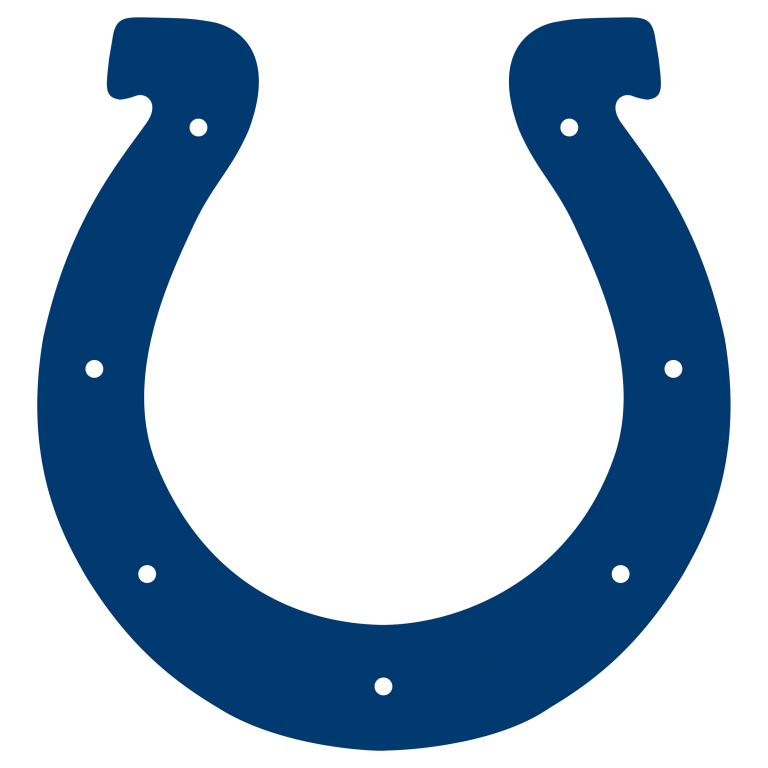
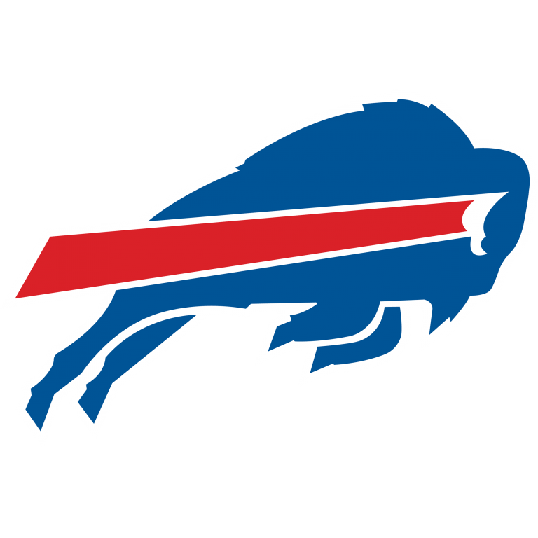
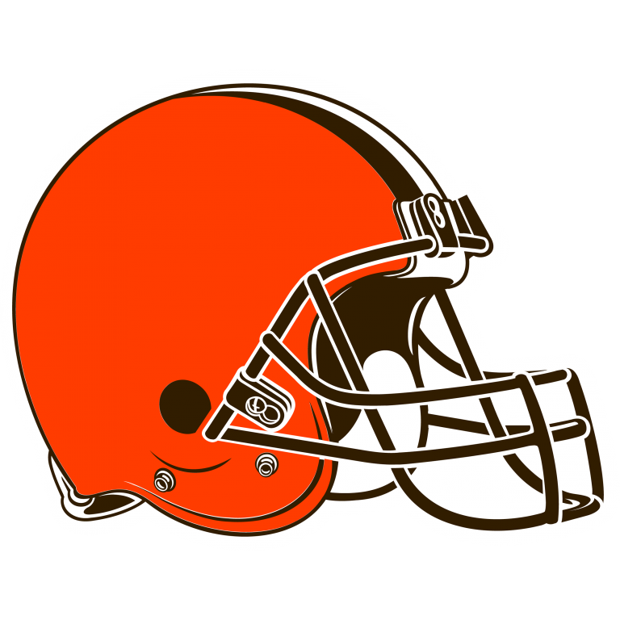
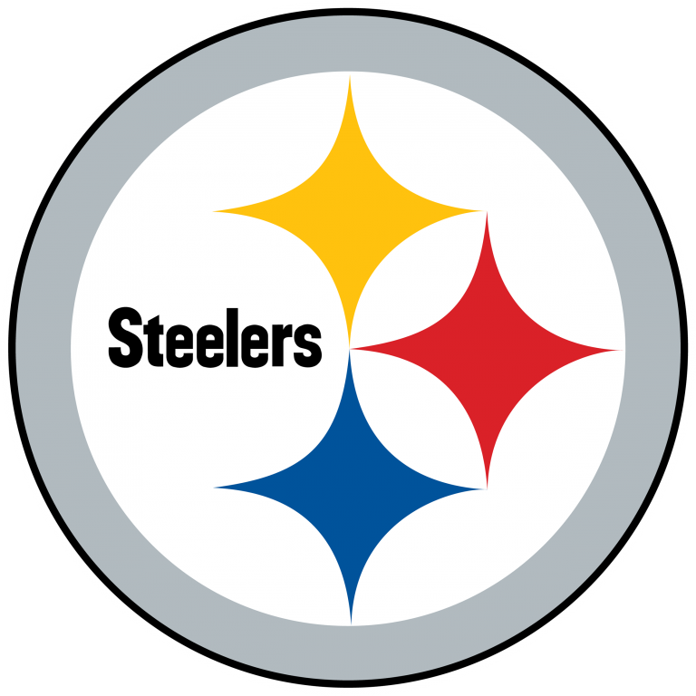
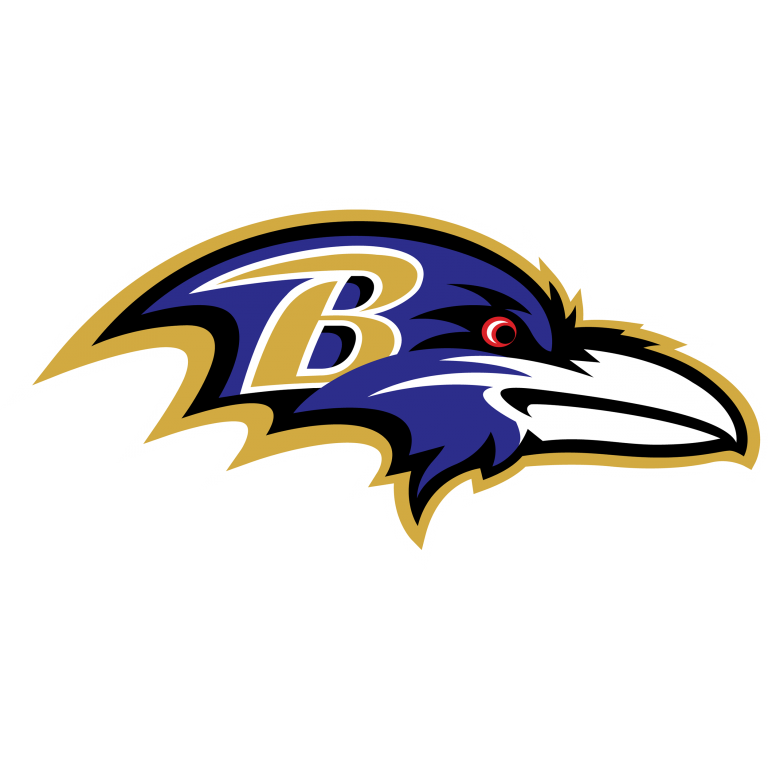
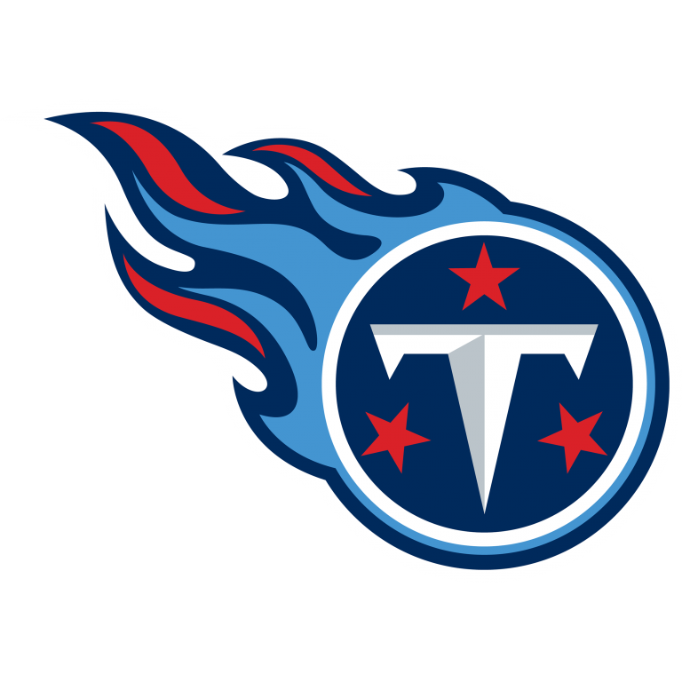
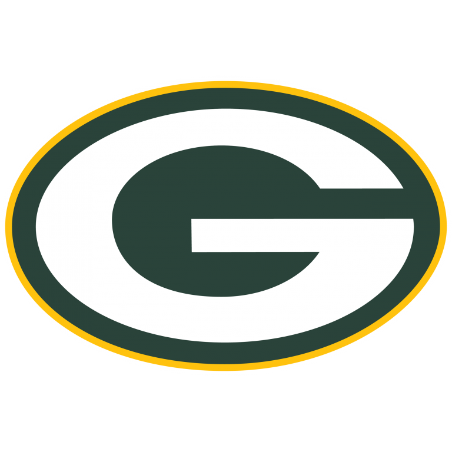
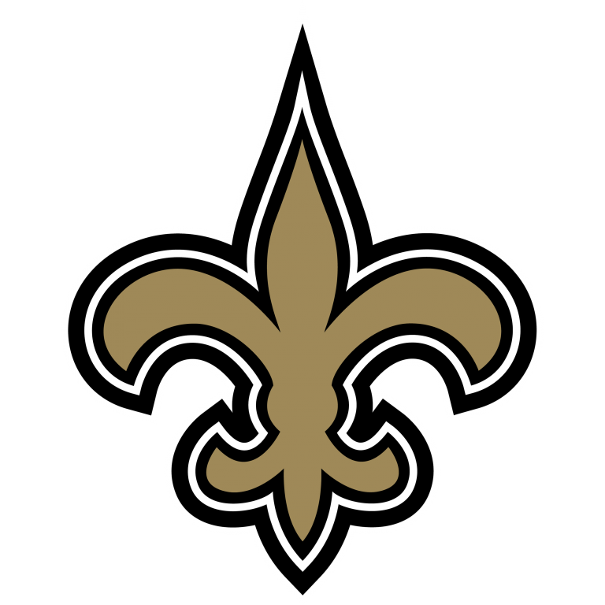
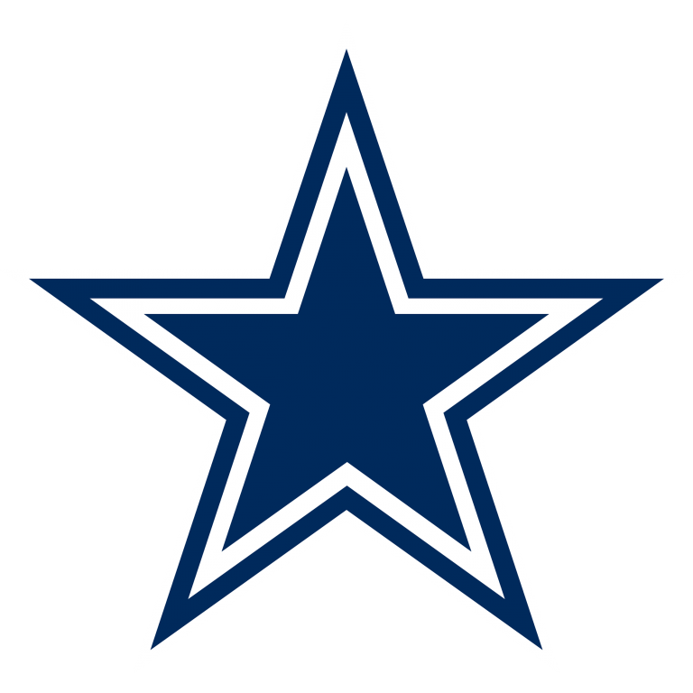

A wild 2020 regular season is drawing to a close with all 32 teams playing their final games on Sunday, and there is a lot on the line with 18 teams alive for a playoff berth, and only 14 spots to fill. Most of these places have already been taken up, but there are various different scenarios for some important things like the #1 seed, division winners, and wild card teams. With multiple key players out due to injuries and Covid, it is anybodys guess as to what goes down in Week 17. Let's break down the most likely seeding outcomes in each conference.
AFC
#1 seed and homefield advantage
The Kansas City Chiefs have already clinched the top seed in the AFC as they currently stand 2 games clear of Buffalo and Pittsburgh at 14 - 1. Some key players are out for the reigning champs against the Chargers, with Tyreek Hill and Patrick Mahomes both expected to be rested before their bye.
#2 seed and #3 seed
The Bills and Steelers are both 12 - 3 and are tied by record for the #2 seed, but the Bills currently hold the tie-breaker by virtue of their Week 14 win over Pittsburgh. These are the only 2 teams in contention for the second seed, and it can only fall to Pittsburgh should they defeat the Browns and Buffalo were to lose to Miami. Steelers HC Mike Tomlin has however decided to sit Ben Roethlisberger for the game against Cleveland, who may need a win to secure their first postseason berth since the 2002 season. It is therefore highly likely that the Bills retain the #2 seed heading into Wild Card weekend, as Pittsburgh will not be going full strength for their final regular season game. The #3 seed will go to whichever of these teams doesn't get the #2 seed.
AFC South division title (also #4 seed)
The winner of the AFC South will clinch the #4 seed in the conference, and through Week 16, the Colts and Titans both stand at 10 - 5, with the Titans holding the tie-breaker by virtue of a better conference record. Tennessee will play Houston on Sunday, and are going in as heavy favorites against a Texan team that lost to the Cincinnati Bengals last week. Indy meanwhile will play Jacksonville, who have lost 14 straight after beating the Colts in Week 1. Rivers and his crew are also heavy favorites to win their game, especially seeing as they must win to keep any playoff hopes alive. Given that the Titans have the tie-breaker though, it looks like they will clinch the division.
#5, #6, and #7 seed
There are essentially 4 teams alive for the final 3 playoff spots: Baltimore, Cleveland, Miami, and Indianapolis/Tennessee, who all hold a 10 - 5 record. So unfortunately, one of those teams will miss out, and it may end up being the Miami Dolphins. They need to win or have one of Indianapolis and Tennessee to lose, but with those 2 teams drawing easy matchups this week, the Dolphins will almost definitely need to win their game against the 12 - 3 Bills who are currently expected to go full strength. Miami will also be without Ryan Fitzpatrick, so they won't be able to turn to him for some magic like they did in last week's stunning win against Las Vegas. This Miami team has been one of the surprises of the season, but beating Buffalo may be a stretch too far for them unless the Bills pull their starters at halftime.
If Miami does indeed miss out, then all that is left to be determined are the final seedings in the AFC. As previously mentioned, both the Titans and Colts are expected to win with easy matchups, but the Ravens and Browns also don't have very difficult games on Sunday. The Ravens go on the road to face the Bengals, who despite winning 2 straight, shouldn't be a problem for Baltimore. Cleveland will face a Steelers team without Big Ben, and although the Browns had a shaky loss to the Jets last week and were beaten 38 - 7 by Pittsburgh earlier in the season, Sunday's game will be very different and should be a win for the Browns.
Assuming those 4 teams win their games, which is most likely, then Tennessee will clinch the #4 seed by winning their division as previously mentioned. In terms of the seeding of the remaining 3 teams, Baltimore holds the head-to-head tie-breaker over both the Browns and Colts, and the Browns hold the head-to-head tie-breaker over the Colts, so it is pretty simple as to which team gets which seed heading into Wild Card weekend. The Ravens will be #5, Cleveland will be #6, and the Colts will be #7.
Most likely final seedings and Wild Card weekend matchups:
@ |
 |
#1 |
||
#7 |
 | @ |
 | #2 |
#6 |
 | @ |
 | #3 |
#5 |
 | @ |
 | #4 |
NFC
#1 seed and homefield advantage
The Green Bay Packers currently hold the drivers seat for the #1 seed in the NFC. All they have to do is beat their divisional rivals the Chicago Bears, who are also vying for a playoff spot, and they will lock up homefield advantage throughout the playoffs with a 13 - 3 record. Should they lose however, there are multiple scenarios that could see 2 other teams claim the top seed. The Saints can clinch the top seed if there is a 3-way tie at 12 - 4 between themselves, Green Bay, and Seattle. That would require a Saints win over the Panthers, a Seahawks win over the 49ers, and a Packers loss to the Bears.
Should the Seahawks lose, then the Saints cannot clinch the top seed with a win and Packers loss as they would lose the head-to-head tie-breaker with Green Bay. Additionally, the Seahawks can also claim the top seed with a win, a Packers loss, and a Saints loss. New Orleans will be playing without Alvin Kamara on Sunday after he was placed on the Reserve/Covid-19 list, but they have a reliable backup in Latavius Murray and should be able to get past Carolina. Seattle meanwhile has not looked great offensively in recent weeks, but their defense has stepped up big time and it would be a shock if they weren't able to beat a very injury hit 49ers team. The Packers have the toughest Week 17 matchup against a Bears team that has scored 30+ in 3 straight games, but Aaron Rodgers has been unstoppable this season and Green Bay's defense held the #1 scoring offense to 14 points last week, so they should win too.
#2 seed and #3 seed
Assuming the Packers do win, then the next 2 seeds will depend on the outcome of the Saints and Seahawks games. If the Saints win, which again is fairly probable, then they will clinch the #2 seed and Seattle would be #3. If however the Saints lose and the Seahawks were to win, the Seahawks would get the #2 seed ahead of New Orleans, who would head into the first round of the playoffs with the #3 seed.
NFC East division title (and #4 seed)
The NFC East has been one of the most intriguing divisions in football this season, and it has been because of how poor the teams in it have been. The winner of this division will be the first team in NFL history to make the playoffs after starting 2 - 7, and heading into Week 17, the Giants, Cowboys, and Football Team are all in play to clinch the #4 seed in the NFC. The simplest clinching scenario here is a Football Team win over the Eagles, as this would give them the division title. Beating Philadelphia may be no simple task however, as rookie QB Jalen Hurts has been mighty impressive for the Eagles, and Washington's offense has struggled recently.
Should Washington lose to the Eagles on Sunday Night Football, then the winner of the Cowboys-Giants game will be crowned champion of the NFC East. The Giants have not been very good recently and although they have drawn some bad matchups, their offense has only scored 19 points in the last 2 weeks. The Cowboys almost doubled that total in their 37 - 17 win over the Eagles last week, and Andy Dalton was playing like he was back in 2015 when he led his Bengals to an 8 - 0 start. The game is in New Jersey which may play a part as it will be very cold and the Cowboys are used to playing indoors, but I think the Cowboys offense will be cooking again and will win the division thanks to Jalen Hurts taking down the Washington Football Team.
#5 seed
Tampa Bay has pretty much locked up the #5 seed in the NFC. After the Saints demolished the Vikings on Christmas Day last week, the Buccaneers can no longer win the division and clinch a home playoff game in the Wild Card round. The only way they can lose the #5 seed is if they lose against the Falcons and the Rams beat the Cardinals, although the latter is looking less and less likely by the day with Jared Goff officially out of the ball game. Furthermore, the Buccaneers will want to make sure they get the #5 seed as that would mean they play the winner of the NFC East in the first round.
#6 seed and #7 seed
Here is where it gets very interesting in the NFC. There are 2 playoff spots left for 3 teams: the Rams at 9 - 6, and the Bears and the Cardinals at 8 - 7. This is actually a very interesting scenario in which all 3 teams have a 'win and in' situation, and it is because the Cardinals and Rams play each other. If the Cardinals beat the Rams, both those teams will be on 9 - 7. If the Bears were also to win against Green Bay which is a tall order, then there would be a 3-way tie, which would eliminate the Rams, giving Chicago the #6 seed and Arizona the #7 seed. If the Bears lost though, the Cardinals and Rams would get the last 2 spots.
On the other hand, a Rams win would automatically guarantee them at least the #6 seed and possibly the #5 seed if Tampa Bay loses. In that case, the Bears would be the #7 seed regardless of the outcome in their game. Similarly, if the Bears won, then they would automatically be in and could finish no lower than the #7 seed. What is the most likely outcome though? Well, the Rams have been hit with a devastating injury as their franchise QB Jared Goff is out with a thumb injury, which really hurts their chances of beating Kyler Murray and the Cards. Their top RB Cam Akers is questionable too, which might make it even harder to get any offense going.
As for the Bears, they have drawn the worst possible matchup at the worst time, as they take on likely MVP Aaron Rodgers and the Packers. Although the Bears have put up 30+ points in each of their last 3 games, they did face the Vikings, Texans, and Jaguars, none of whom have a particularly good defense. The Packers defense on the other hand played lights out last week against Tennessee and was able to contain Derrick Henry pretty well, so it is unlikely the Bears score more than 30 points again. Furthemore, their defense will have to keep up with Aaron Rodgers, something they weren't able to do in their previous meeting this season as they allowed 41 points. Unfortunately for Chicago, it looks like they won't be travelling anywhere next weekend, unless the Rams can pull off a shock against Arizona.
Most likely final seedings and Wild Card weekend matchups:
|  | @ |
#1 |
||
#7 |
 |
@ |
 | #2 |
#6 |
 |
@ |
 |
#3 |
#5 |
 |
@ |
 | #4 |